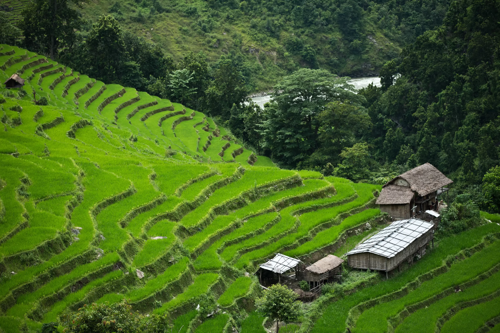

Sustainable Land Management
The approach of Sustainable Land Management recognizes that soil is a finite and essential resource, and it should be used in a way that ensures its long-term viability. Some key components of sustainable land management include:

- Agroforestry: Integrating trees and shrubs into farming systems can provide multiple benefits, such as wind protection, nutrient cycling, and improved soil structure
- Crop Diversification: Planting a variety of crops can improve soil health and reduce the risk of erosion. It also enhances biodiversity and pest management.
- Conservation Easements: These are legal agreements between landowners and land trusts or government agencies to protect and conserve land for future generations.
- Wetland Restoration: Restoring wetlands can help filter and slow down water runoff, reducing erosion and improving water quality.
- Soil Testing and Monitoring: Regular soil testing helps farmers and land managers understand the nutrient levels and overall health of the soil, allowing them to make informed decisions about fertilization and other soil management practices.
- Support for Research and Innovation: Investing in research to develop new, more effective erosion control methods and technologies is crucial.

Colclusion
Sustainable land management practices, legislation, and education are all vital in the effort to prevent soil erosion and ensure a healthy, productive, and ecologically balanced environment for present and future generations. It is imperative that individuals, communities, governments, and organizations work together to combat soil erosion and its associated challenges.
© All Rights Reserved